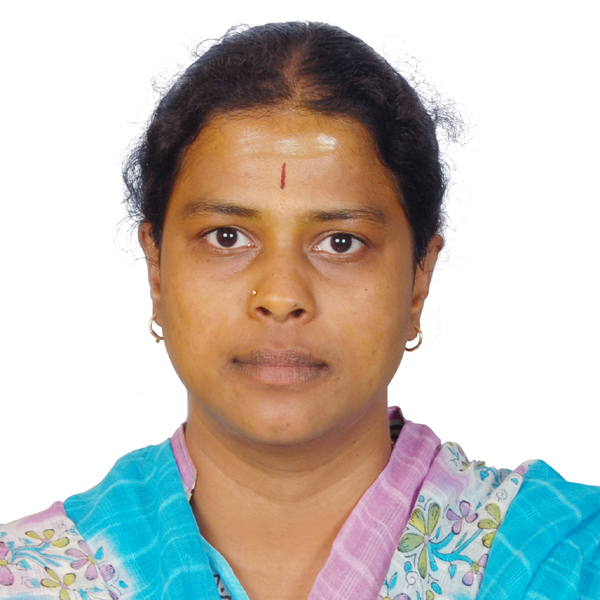

Advancing intelligent, connected and autonomous systems through research in wireless communications, autonomous navigation and cyber-physical systems.

Pioneering research in autonomous systems and wireless technologies
I am a Professor at IIT Hyderabad specializing in Autonomous Navigation Technologies, Wireless Communications, and Cyber-Physical Systems. Over more than 15 years of academic and research experience, my work has spanned autonomous systems, drone-based sensing, and wireless sensor networks — fields where I continue to drive innovation through cutting-edge research and real-world deployments.
My research focuses on developing next-generation technologies for aerial and terrestrial autonomous systems, with real-world applications in smart cities, environmental monitoring, and industrial automation.
I have had the privilege of mentoring numerous M.Tech and PhD students, and have served as Principal Investigator on several high-impact projects funded by Government agencies and industry partners. My research findings have been published in leading international journals and conferences.
100+ peer-reviewed publications in top-tier journals
Multiple partnerships with leading technology firms
15+ PhD students supervised to completion
Significant competitive research funding secured
Cutting-edge research in autonomous systems and wireless technologies
Advanced algorithms for drone and robot navigation in complex environments
Next-generation wireless systems and communication protocols
Integration of computational and physical processes
Distributed sensing and data collection systems
Open datasets for the research community
Comprehensive dataset containing sensor readings from various environmental monitoring stations, UAV flight data, and wireless communication parameters. Available for research purposes.
Acknowledgments for research excellence and contributions